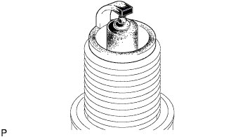
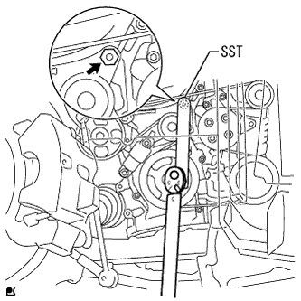

Engine Mechanical (2AZ-FE) Function Inspection |
| 1. Inspect Coolant (Toyota Genuine Super LLC) |
Remove the reserve tank cap.
Check that there are no excessive deposits of rust or scale around the reserve tank cap and water inlet.
Install the reserve tank cap.
| 2. Inspect Engine Oil |
Inspect the oil for deterioration, water entry, discoloration or thinning, and replace the oil if the quality is visibly poor.
| 3. Inspect Battery Specific Gravity |
 |
Inspect the battery specific gravity of each cell.
| 4. Inspect Air Cleaner Filter Element Sub-assembly |
Inspect the air cleaner filter element for dirt and clogging.
| 5. Inspect Spark Plug |
 |
| Manufacturer | Type |
|---|---|
| DENSO | SK20R11 |
| NGK | IFR6A11 |
Visual Inspection
Inspect the spark plug for damaged threads and damaged insulator.
Spark Plug Gap
| 6. Inspect Fan & Alternator V Belt |
Inspect the entire circumference of the belt ribs and back for wear and cracks.
 |
Check that the belt is correctly set on each pulley.
| 7. Inspect V-ribbed Belt Tensioner Assembly |
Stop the engine from idle speed and check that the belt does not protrude beyond the width of the tensioner pulley.
 |
Attach a torque wrench to SST and turn the V-belt tensioner clockwise.
)Remove the fan & alternator V-belt. (see)
Move the V-belt tensioner in both rotational directions and check that it does not catch.
Install the fan & alternator V-belt. (see)
| 8. Inspect Ignition Timing |
Warm up the engine.
Inspection Using TaSCAN
Connect SST (TaSCAN) to DLC3.
Operate according to the screen display, select [Ignition Timing] and check that the ignition timing is within the standard.
Check that the ignition timing advances quickly when the engine speed is increased.
Select [Active Test] - [TC Terminal ON], turn the TC terminal ON and measure the ignition timing.
Inspection by Shorting TC Terminal
Remove engine cover assembly No.1.
Connect a timing light.
 |
Pull out the wire harness at the position shown in the illustration and connect the timing light clip to the wire harness.
 |
Using diagnosis check wire No. 2, connect terminals 13 (TC) and 4 (CG) of DLC3.
Check that the ignition timing is within the standard.
Disconnect terminals 13 (TC) and 4 (CG) of DLC3.
Check that the ignition timing is within the standard.
Check that the ignition timing advances quickly when the engine speed is increased.
Remove the timing light.
Install engine cover assembly No.1.
| 9. Inspect Idle Speed |
Connect SST (TaSCAN) to DLC3.
Operate according to the screen instructions to display the "ECU Data Monitor" screen and measure the engine speed.
| 10. Compression Inspection |
Remove the air cleaner cap w/ air cleaner hose.
Disconnect the electronically controlled throttle body assembly connector.
Remove the ignition coils (4).
Remove the spark plugs (4).
Forcibly open the throttle section of the electronically controlled throttle body assembly by hand and measure the compression of each cylinder.
Install the spark plugs (4).
Install the ignition coils (4).
Connect the electronically controlled throttle body assembly connector.
Install the air cleaner cap w/ air cleaner hose.
| 11. Inspect CO, HC Concentration |
Start the engine.
Race the engine at 2500r/min for 2 minutes.
At idle, insert the tester probe 40cm or more into the tailpipe.
Inspect the CO and HC concentrations.
If the CO and HC are outside the standard, inspect using the procedure shown below.
Inspect Oxygen Sensor (see)
Perform troubleshooting referring to the table below.
| CO | HC | Problem | Probable Cause |
|---|---|---|---|
| OK | High | Rough idle |
|
| Low | High | Rough idle (HC unstable) |
|
| High | High | Rough idle (black smoke) |
|